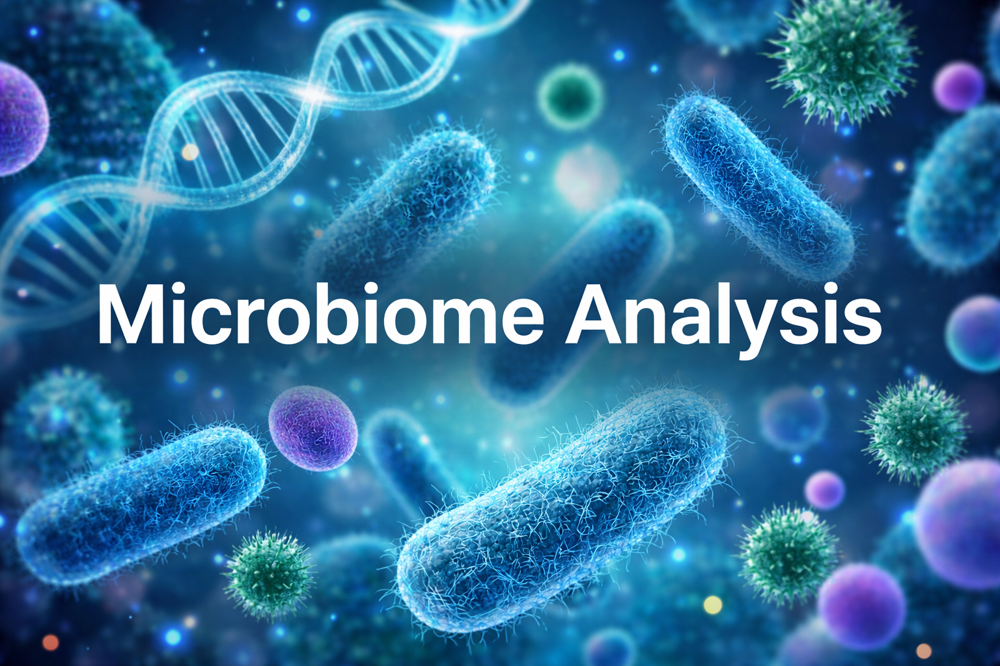
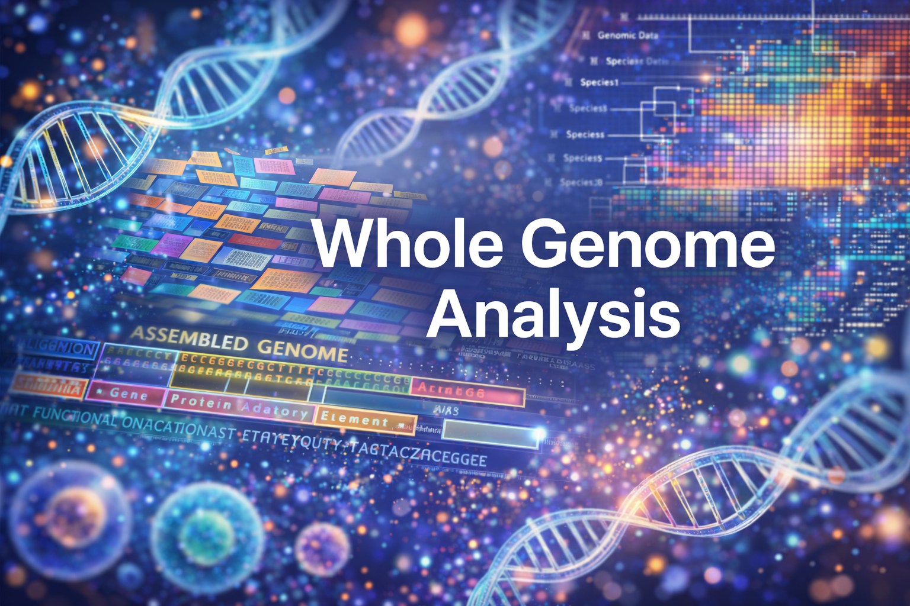

I’m a bioinformatician, scientist, and educator, working with clients across the life sciences to turn complex biological data into meaningful insights. I specialise in whole genome sequence analysis, metagenomics, and transcriptomics. I help research teams transform complex datasets into reproducible, and actionable results. I provide training and mentoring in bioinformatics, R programming, and next-generation sequencing data analysis, helping students, researchers, and professionals build practical computational skills.
About Me
Services offered

New
Microbiome Analysis
Microbiome analysis for research teams working with metagenomic sequencing data. Customised workflows include quality control, taxonomic profiling, diversity analysis, functional annotation, and clear visualisation of microbial community structure. Deliverables include reproducible bioinformatics pipelines, well-documented reports, and publication-ready figures.
Single cell RNAseq analysis
Analysis of single-cell RNA-seq data to help researchers uncover cellular heterogeneity and gene expression patterns at single-cell resolution. Workflow includes quality control, normalization, clustering, cell type identification, and differential expression analysis. Deliverables include reproducible analysis pipelines, well-documented reports, and publication-ready visualisations

WGS analysis
e comprehensive whole genome sequencing (WGS) analysis to support genomic research, surveillance, and comparative studies. My workflows include genome assembly, variant calling, genome annotation, and functional comparison to identify key genetic differences between strains or samples. Deliverables include reproducible analysis pipelines, detailed reports, and publication-ready visualisations

Bulk RNA-seq analysis
Comprehensive analysis of bulk RNA-seq data to identify gene expression changes and biological pathways associated with different experimental conditions. Deliverables include reproducible analysis pipelines, detailed reports, publication-ready visualisations, and interpretable biological insights to support research and discovery.

Bioinformatics & R Training
Hands-on training in bioinformatics, data analysis, and R programming for students, researchers, and early-career professionals.Deliverables include training materials, guided exercises, project support, and personalized mentoring to help learners build confidence and develop industry-relevant skills.
Work Experience
Independent Bioinformatics Consultant - Remote (2026 - present)
Bioinformatics Consultant - Cencora Pharmalex, Germany (2022 - 2026)
Bioinformatics Scientist - Scion, New Zealand (2020 - 2022)
Postdoctoral Researcher - Swedish University of Agricultural Sciences (2018 - 2019)